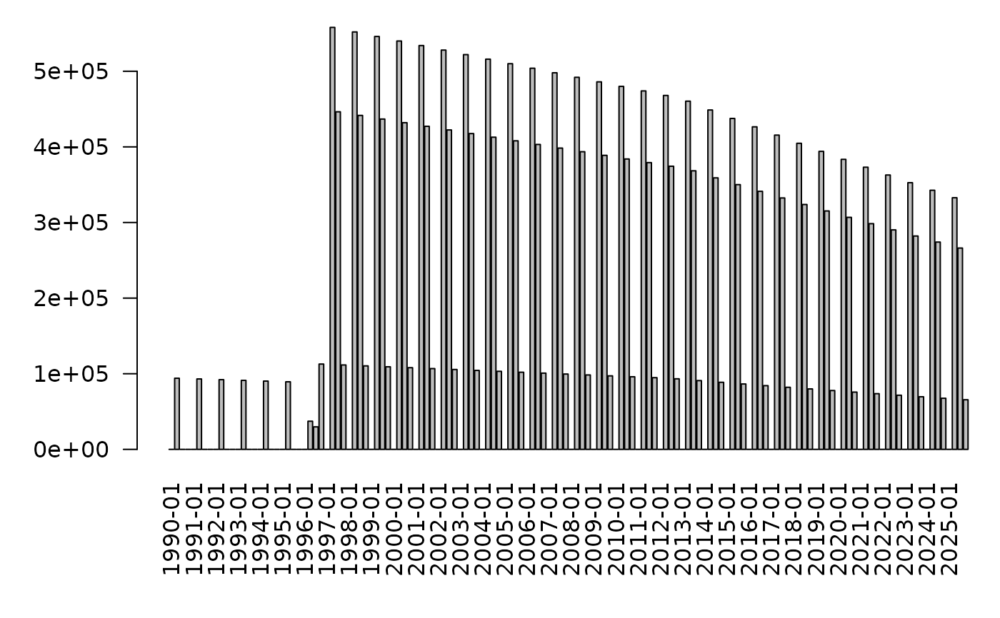

quota.RdAdd projected fishing quotas / MSE
g3_quota_hockeystick(
predstocks, # Predator / fleet stocks forming a name for quota
preystocks, # Mature spawning-stocks
preyprop_fs = 1, # NB: Doesn't have to sum to 1
trigger = g3_parameterized("hs.trigger", by_stock = predstocks),
target = g3_parameterized("hs.target", by_stock = predstocks),
stddev = g3_parameterized("hs.stddev", by_stock = predstocks, value = 0),
unit = c("harvest-rate-year", "biomass-year", "individuals-year") )
g3_quota_hockeyfleet(
predstocks, # Predator / fleet stocks forming a name for quota
preystocks, # Mature spawning-stocks
preyprop_fs = 1, # NB: Doesn't have to sum to 1
btrigger = g3_parameterized("hf.btrigger", by_stock = predstocks),
harvest_rate = g3_parameterized("hf.harvest_rate", by_stock = predstocks),
stddev = g3_parameterized("hf.stddev", by_stock = predstocks, value = 0) )
g3_quota_assess(
predstocks,
preystocks,
assess_f,
unit = c("biomass-year", "biomass", "harvest-rate", "harvest-rate-year",
"individuals", "individuals-year") )
g3_quota(
function_f,
quota_name = attr(function_f, 'quota_name'),
year_length = 1L,
start_step = 1L,
interim_value = NULL,
run_revstep = -1,
run_f = TRUE,
run_at = g3_action_order$quota )A list of g3_stock objects for all predators/fleets that will use the quota.
In g3_quota_hockeyfleet, these will be used to name the quota/parameters.
In g3_quota_assess, these will define helper variables for use in function_f.
A list of g3_stock objects for all prey that the quota will apply to.
In g3_quota_hockeyfleet, these will be used to define the spawning stock biomass.
In g3_quota_assess, these will define helper variables for use in function_f.
A formula or list of formulas representing the proportion of that prey that makes up the Spawning Stock Biomass (SSB).
The proportions do not need to sum to 1, for example you may use preyprop_fs = 0.4 to assume that 40
Using a suitability function is also supported, e.g. g3_suitability_exponentiall50.
Trigger biomass (or number of individuals, if unit is "individuals-year"), see formula
The maximum quota value to be returned, assuming the stock is healthy, and above trigger, see formula
If > 0, then apply log-normal noise to the output quota.
A formula that runs an assessment model & returns a quota. See vignette TODO:
A single string representing the returned quota's unit, as used by g3a_predate_catchability_project.
In g3_quota_hockeyfleet, the unit of both harvest_rate and btrigger
In g3_quota_assess, the value returned by assess_f will be assumed to have this unit.
Output of one of the g3_quota_* functions, responsible for choosing the next quota
A name used to refer to the quota internally, by default a combination of the quota function and the stocks used.
The length of the fishing year, in years, see details.
The initial step of the fishing year, in model steps, see details. This can be used to offset the fishing year from the calendar year for, if your fishing year should run autumn–autum. It can also offset from the start of the model, if your model starts at 1998 and your fishing year should run 2000–2005.
A negative integer, defining which step in the fishing year an assessment for next year is performed.
If NULL, run every step.
When the quota should be recalculated, in addition to any condition defined by run_revstep.
A formula that provides the interim value to bridge the gap between historical landings & projected quota values, see examples.
Integer order that actions will be run within model, see g3_action_order.
Once added the following variables can be reported:
A vector of quota values, one per fishing year in your model, see quota_hockeyfleet_trawl__var in example below
Instead of generating a quota per calendar year or step, as we do with other projections, quotas are per fishing year.
The schedule of the fishing calendar is defined with:
The length of the fishing year, in years. If > 1, the same yearly quota will be used for all years
Offset of the initial fishing year, in model steps. So you can both start your fishing year in autumn, and have a fishing year that is offset against the model start year
The step in the fishing year that the quota for the next year should be calculated
In addition, g3a_predate_catchability_project will allow you to assign proportions of a quota to model steps.
Examples:
year_length = 2, start_step = 3, run_revstep = -2A 2 year fishing calendar, i.e. a quota will be calculated every other year and the same value used for the next 2 years. Assuming 4 model steps, the quota will be calculated in winter for the next fishing year in summer.
year_length = 5, start_step = 4 * 2A 5 year fishing calendar, the quota will be recalulated every 5 years in the autumn (the final step before the next fishing year starts).
If our model starts at 1998 and have 4 steps, 4 * 2 means our first full fishing year is 2000–2005.
A formula for use in g3_quota
$$SS = \sum^{preys}_{p}{S_p N_p}$$ ... if unit = "individuals-year"
$$SS = \sum^{preys}_{p}{S_p N_p W_p}$$ ... otherwise
$$Tg {min}(\frac{SS}{Tr}, 1)$$
Target consumption, provided by target argument, by default the hs.target parameter
Trigger biomass / harvest-rate / individuals, provided by trigger argument, by default the hs.trigger parameter
Spawning Stock (SS) in biomass / individuals
Suitable proportion of prey \(p\), as decided by preyprop_fs
Total abundance of prey \(p\)
Mean weight of prey \(p\)
For backward-compatibility, essentially the same as g3_quota_hockeystick(..., unit = "harvest-rate-year")
A formula for use in g3a_predate_catchability_project, returning the current value of the quota quota_quota_name__var time vector.
In addition, returns an ancillary step that populates the quota_quota_name__var time vector according to the fishing year.
st <- g3_stock("st", c(10))
fleets <- list(
# NB: We break down our fleet names into parts, g3_quota_hockeystick() will
# use the common name part (read: trawl) when naming parameters.
nor = g3_fleet(c(type = "trawl", country = "nor")),
oth = g3_fleet(c(type = "trawl", country = "oth")) )
# Define quota for both fleets, with an assessment in spring, application in autumn
fl_quota <- g3_quota(
g3_quota_hockeystick(fleets, list(st), preyprop_fs = 1, unit="harvest-rate"),
start_step = 4L,
run_revstep = -2L )
# Invent some historical landings tables for the sake of example
landings_trawl_nor <- expand.grid(year = 1990:1995, step = 2)
landings_trawl_nor$total_weight <- 1e6
landings_trawl_oth <- expand.grid(year = 1990:1995, step = 2)
landings_trawl_oth$total_weight <- 1e8
actions <- list(
g3a_time(1990, 1995, c(3,3,3,3)),
# Define st with steadily collapsing stock
g3a_otherfood(st, num_f = g3_timeareadata('st_abund', data.frame(
year = 1990:2050,
abund = 1e6 - 1e4 * seq(0, 2050-1990)), "abund"), wgt_f = 10),
# Fleet predation, both sharing the same quota
g3a_predate(
fleets$nor,
list(st),
suitabilities = 0.8,
catchability_f = g3a_predate_catchability_project(
# Use the (shared) quota when projecting, otherwise use historical landings
quota_f = fl_quota,
landings_f = g3_timeareadata("landings_trawl_nor", landings_trawl_nor) )),
g3a_predate(
fleets$oth,
list(st),
suitabilities = 0.8,
catchability_f = g3a_predate_catchability_project(
# Use the (shared) quota when projecting, otherwise use historical landings
quota_f = fl_quota,
landings_f = g3_timeareadata("landings_trawl_oth", landings_trawl_oth) )),
NULL )
model_fn <- g3_to_r(c(actions,
g3a_report_detail(actions),
g3a_report_history(actions, "__num$|__wgt$", out_prefix="dend_"), # NB: Late reporting
g3a_report_history(actions, "quota_", out_prefix = NULL) ))
attr(model_fn, "parameter_template") |>
# Project for 30 years
g3_init_val("project_years", 30) |>
# Quota is yearly, so specify cons.step parameters to divide up into steps
# Fishing predominantly occurs in spring/summer, none in winter
g3_init_val("trawl_*.cons.step.#", c(0.0, 0.5, 0.4, 0.1)) |>
# 3/4 of the quota goes to nor, the rest to oth
g3_init_val("trawl_nor.quota.prop", 0.75) |>
g3_init_val("trawl_oth.quota.prop", 0.25) |>
# Hockefleet: harvest rate & trigger biomass (shared across trawl_nor & trawl_oth)
g3_init_val("trawl.hs.target", 0.2) |>
g3_init_val("trawl.hs.trigger", 7.2e6) |>
identity() -> params.in
r <- attributes(model_fn(params.in))
## Total biomass at assessment point
g3_array_agg(r$dend_st__num * r$dend_st__wgt, "year", step = 2)
#> year
#> 1990 1991 1992 1993 1994 1995 1996 1997 1998 1999
#> 500000 495000 490000 485000 480000 475000 9350389 8556000 8464000 8372000
#> 2000 2001 2002 2003 2004 2005 2006 2007 2008 2009
#> 8280000 8188000 8096000 8004000 7912000 7820000 7728000 7636000 7544000 7452000
#> 2010 2011 2012 2013 2014 2015 2016 2017 2018 2019
#> 7360000 7268000 7176000 7086075 7001620 6916532 6831307 6745905 6660328 6574574
#> 2020 2021 2022 2023 2024 2025
#> 6488644 6402537 6316253 6229790 6143149 6056328
## Quota values, inflection once total biomass falls below btrigger
par(mar = c(6, 5, 1, 0)) ; barplot(r$quota_hockeystick_trawl__var, las = 2) ; abline(v=27.7)
## Consumption by fleet, demonstrating
## (a) fixed landings before projections (landings_trawl_nor)
## (b) inflection of hitting btrigger
## (c) Uneven spread of fishing effort throughout year (fl.quota.step.#)
barplot(g3_array_agg(r$detail_st_trawl_nor__cons, "time"), las = 2)

## Timing of calculations for fishing year
fl_quota <- g3_quota(
# Our quota values are year/step at the assessment time step
quote( cur_year * 10 + cur_step ),
year_length = 1L,
start_step = 4L,
interim_value = g3_parameterized("interim_value", value = 99, optimize = FALSE),
run_revstep = -3L )
yr <- as.integer(format(Sys.Date(), "%Y"))
actions <- list(
g3a_time(yr - 6, yr - 1, project_years = 10, step_lengths = rep(3L, 4)),
fl_quota,
# At each step in the model, print the current year/step, and the quota value that will get used
# NB: before projection, g3a_predate_catchability_project() will use landings data not the quota
g3_step(g3_formula(
writeLines(paste(cur_year, cur_step, if (cur_year_projection) q else "landings")),
q = fl_quota )),
NULL)
model_fn <- g3_to_r(c(actions,
g3a_report_history(actions, "quota_", out_prefix = NULL) ))
attr(model_fn(), "quota__var")
#> 2019 1 landings
#> 2019 2 landings
#> 2019 3 landings
#> 2019 4 landings
#> 2020 1 landings
#> 2020 2 landings
#> 2020 3 landings
#> 2020 4 landings
#> 2021 1 landings
#> 2021 2 landings
#> 2021 3 landings
#> 2021 4 landings
#> 2022 1 landings
#> 2022 2 landings
#> 2022 3 landings
#> 2022 4 landings
#> 2023 1 landings
#> 2023 2 landings
#> 2023 3 landings
#> 2023 4 landings
#> 2024 1 landings
#> 2024 2 landings
#> 2024 3 landings
#> 2024 4 landings
#> 2025 1 99
#> 2025 2 99
#> 2025 3 99
#> 2025 4 20251
#> 2026 1 20251
#> 2026 2 20251
#> 2026 3 20251
#> 2026 4 20261
#> 2027 1 20261
#> 2027 2 20261
#> 2027 3 20261
#> 2027 4 20271
#> 2028 1 20271
#> 2028 2 20271
#> 2028 3 20271
#> 2028 4 20281
#> 2029 1 20281
#> 2029 2 20281
#> 2029 3 20281
#> 2029 4 20291
#> 2030 1 20291
#> 2030 2 20291
#> 2030 3 20291
#> 2030 4 20301
#> 2031 1 20301
#> 2031 2 20301
#> 2031 3 20301
#> 2031 4 20311
#> 2032 1 20311
#> 2032 2 20311
#> 2032 3 20311
#> 2032 4 20321
#> 2033 1 20321
#> 2033 2 20321
#> 2033 3 20321
#> 2033 4 20331
#> 2034 1 20331
#> 2034 2 20331
#> 2034 3 20331
#> 2034 4 20341
#> fishingyear
#> 2019:2019 2019:2020 2020:2021 2021:2022 2022:2023 2023:2024 2024:2025 2025:2026
#> 0 99 99 99 99 99 99 20251
#> 2026:2027 2027:2028 2028:2029 2029:2030 2030:2031 2031:2032 2032:2033 2033:2034
#> 20261 20271 20281 20291 20301 20311 20321 20331
#> 2034:2035
#> 20341